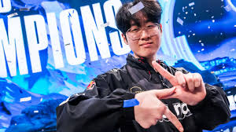

This game is very difficult for new comers looking to play the game, espcially if players aren't practicing their technical skills and knowledge of the game on a daily basis.Players who do tend to play the game more, while focusing on getting better, tend to raise their skill level and climb thier way up the ranks. Still not convinced? check out this for more.
The First priority when starting
Even though it sounds simple or might be overlooked, the first thing someone must do to get better at anything new, is practice or repetition. Make sure you are spending time on the game playing starting off with the game mode Practice mode
I recommend this mode first because it helps new players walk through all the different types of abilities and keybinds to use for certain actions on the game. Whether that's attack moves, how to unlock your screen, and summoner spells.
The Second priority when starting
The next step when you are feeling comfortable with keybinds and which button do certain actions, I want you to start playing the game mode Aram. This mode is a fun and casual mode perfect for those first jumping into the game.
I recommend this mode next because evem though you do not OWN any champions yet at this point, this game mode allows you to play random champions and even allows you to roll 2 times for another random champion if you would rather play another. This game mode is a 5v5 in a smaller map with one single lane but with the same concept of attacking the enemy's towers with the end goal of their Nexus while still defending yours.
Here is a little sneak peak into what Aram will look like:

Ready to move on?
Once you are ready and comfortable with playing champions and using their abilities and summoner skills, lets move on to the game mode, Summoner's Rift(Normals/Ranked)
The next impportant steps we are going to discuss now is the roles there are in Summoner's Rift
- Top Lane
- Jungle
- Mid Lane
- Attack Damage Carry(ADC/Bot Carry)
- Support(Bot Support)
Depending on the role you decide to play, tends to play into whether you are playing more of a tanky build like top lane or more damage heavy like mid laner or ADC.
From here it is just a matter of finding the role you like and playing to your hearts content!
My Favorite League Pro's and will be yours soon!
The All-Time Greatest League of Legends Player in History, T1 Faker!
- Faker has the MOST League Of Legends Worlds Championships with 5
- The closed team in league to Faker in championships is Gen.G having 2 worlds under their belt.
- Fakers Career spans from 2013-Present
- Record of W-896 L-440 with a Win rate of 67.1%
My next favorite behind Faker is one of his past teammates being Zeus who was part of winning Worlds with Faker 2 times
- Zeus came up from the T1 acadamy team before being called up to the main roster
- Zeus bursted onto the scene quicly winning his first 2 Worlds
- Zeus is known for being one of the Best Top Laners after his first year Pro
These are my favorite players of all time because I came across this game on their run in Worlds back in 2023 early November-mid December
Watching these two absolutely dominate together along wtih their other teammates being, Oner(jougle), Guma(ADC), and Keria(Support) was a thing of beauty to witness.

This will always be my Favorite team and players ever! They are what made me fall inlove with the game and their fans all in one small period.